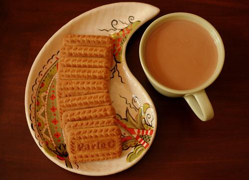
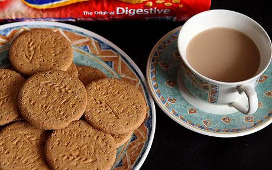

About this blog/me
September 24, 2014
Hello! Tea, anyone ? ☺
—>
Well, well, well!
This has been brewing in the kettle of my heart/mind since long…
And the time has finally come to serve 1 it!
Confession: I am an ardent lover of Tea—a fact my friends all over the world can vouch for.
(No offence meant; you are free to substitute Tea with Coffee or whatever beverage (or activity!) that you love with the same connotation. My dear friend Vijay would definitely go for Coffee, while my dear wife Rajeshwari would clearly choose fresh fruit-juice!)
And dunking 2 biscuits in piping hot-tea is such a ‘Zen’-experience in itself! :)
Just a tiny cup o’ tea makes me
…feel “i” cease to exist for the duration of sipping it (I only realize it later!)…
…get “LOST” in a trance of THOUGHT-LeSS-ness, and NO-MIND-ness,
…move to a state of EMPTY-ness & joy-filled ALONE-ness despite being in the company of my loved & loving ones,
…feel a strange kind of WARMTH & BLiSS that is, to put it in my way, PRiCE-Le$$ ! :)
To “FIND” (out) Something beautiful, we need to get “LOST” sometimes!
Don’t you agree ? :)
Well, when I am in India—both in my native village as well as in Bangalore, it is usually hot tea(with milk) laced with aromatic _Lemon-Grass,_ accompanied by melt-in-the-mouth goodness of Parle-G biscuits! ♥ :)

And when I was in the UK, thanks to my loving friends, it was tea with the classic Mc-Vities Digestives:

(the above image is courtesy The Telegraph, UK, in a recent story)
But, it’s not just about Biscuits and Tea!
+ + =
Through this site,
I want to share some stories/experiences that are as ‘beautiful’ & ‘en-lightening’ as are moments of dipping into your favourite book with a cup of hot tea and snacks during chilly mornings or drizzly late-noons & evenings. :)
I want to share my little “EUREKA!”, “AHA!”, and even the “WTF!” moments (the last being especially ubiquitous these days in software); the epiphanies, along with (m)any other learnings connected to Computers or otherwise through this blog.
‘Feeling’ the presence of a beautiful poem, story, equation, program, function, algorithm, song, pattern, or an image gives me the same kind of ‘kick’ that a cup of hot tea does! :)
And hence the parallel with tea.
And me…?
Oh, by the way, I am Raghu Ugaré — a passionate programmer, and an avid Art, Science & Math student for life.
I love to play with IDEAS, PATTERNS, WORDS & SYMBOLS (not realizing that it might be the other way round ?!?).3
I love ALL kinds of patterns be it in Nature, Philosophy, Religion, Science, Mathematics, Painting, Prose, Poetry, Music, Programming, etc., and the mysterious connections and unity underneath them all.
I love typography and am a font-fanatic.4
I love to build simple models from which I try to ‘mine’ & ‘glean’ useful data & insights.
Above all, I love to SHARE my discoveries with my dear friends! :)
I am indeed incredibly blessed to have come into the contact of some truly great gurus & brilliant friends from diverse fields, & I want to share all that I can possibly recollect & deem worthy of sharing that I learnt from them, directly or otherwise.
Please keep reading these free-flowing ‘letters’ to YOU — I hope they make you smile, for a while! :)
Do visit my personal blog for thoughts on other topics…
Recently, I also wrote an article on Medium about the Genius of Sreenivasa Ramanujan.
Have a wonder-filled time with your dear ones!
Love & Best Wishes,
Raghu Ugaré
Planet Earth
❝ We design our world, while our world acts back on us and designs us. ❞
– Anne-Marie Willis
Footnotes
- “serve” on the web, of course! :) [return]
- Yes, ‘dunk’ rather than just ‘dip’. Look it up by clicking on the word. :) [return]
- Sometimes, I do wonder:
“Does our Mind manipulate IDEAS, PATTERNS, WORDS & SYMBOLS or is it in fact, manipulated/shaped by them?” [return] - You will no doubt be witness to a constant ‘flux’ of changes in the typefaces (fonts) on this site as I keep experimenting! [return]